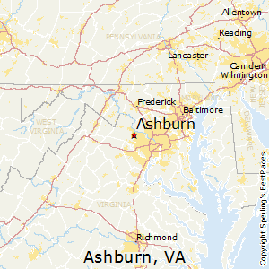

- Patrick Geiger
- Home
- Experience
- Projects
My home is Ashburn, Virginia.
I’m an aspiring developer who loves everything about the web and cloud computing. I find the ever changing nature of the web to be exciting, as there's always a new technology to learn. While some find it exhaustive, I think it's amazing how quickly web development changes. I think that cloud computing goes hand in hand with web development due to how quickly you can deploy just about anything with it.
Currently, I hold a Bachelor's Degree in Computer Science but there is so much more to learn, I feel that I have only scratched the surface of the field. I am continuing my education with Graduate school and by teaching myself through the use of Team Treehouse and books related to the field.
Acquire a Master's Degree in Applied Computer Science by May, 2018.
Get AWS associate certifications as both a Developer and Solutions Architect.
I want to build my skillset and develop my knowledge with:
I'd like to work for a web development company or a company involved in cloud computing. I hope to start out with Front End Development and eventually gravitate towards the Back End so I can become a Full Stack Developer.
I have a number of different hobbies, but I particularly enjoy spending my time: